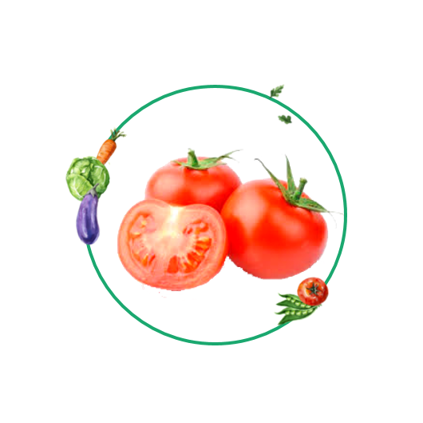
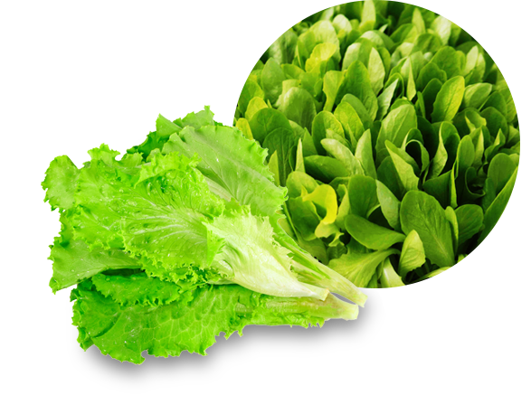
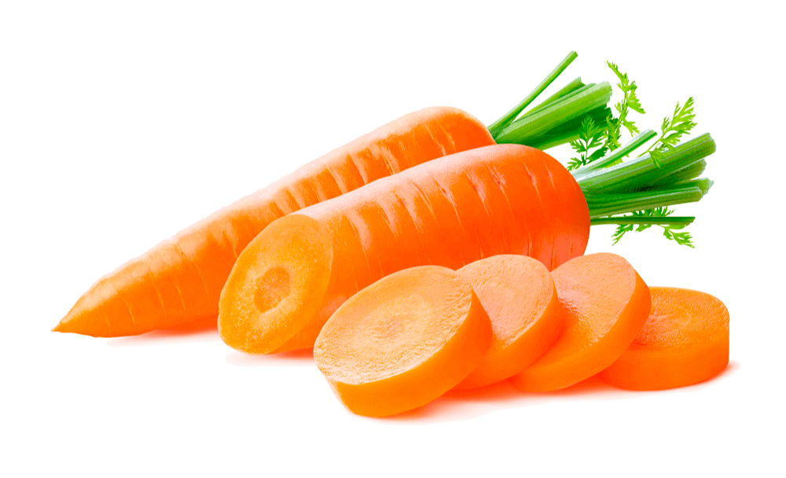
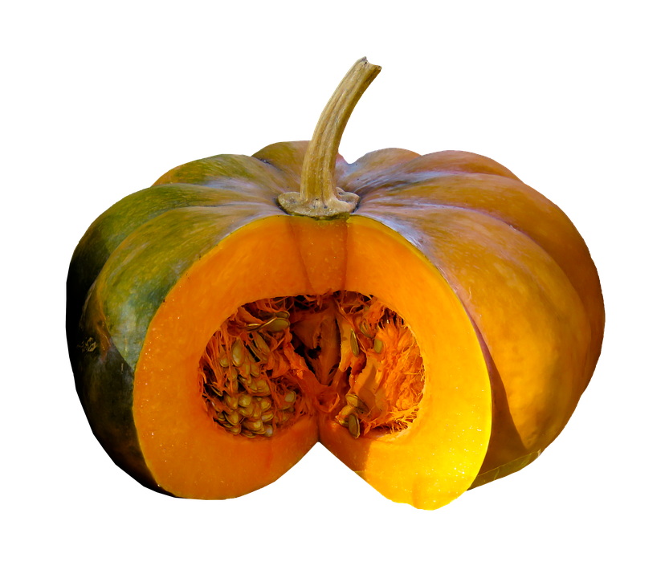
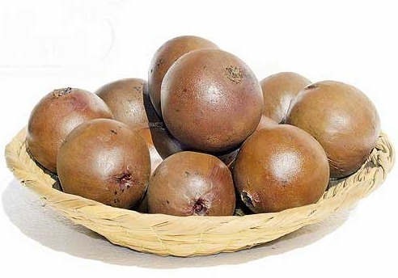

SISTEMA DE RIEGO

Tomate
Temperatura óptima: entre los 20 y 30 °C en el día y entre 10 y 17 °C en la noche. Humedad óptima: oscila entre 60 % y 80 %.

Lechuga
Temperatura máxima: 30 °C, mínima: –6 °C. Temperatura del suelo: mas de 6-8 °CLa humedad conveniente es del 60 al 80 %, aveces menos del 60 %.

Zanahoria
La temperatura mínima: 9ºC y un óptimo: 16-18ºC. Prefiere los suelos arcillo-calizos, aireados y frescos

Calabaza
La temperatura ideal para almacenaje debe ser de entre 50 y 55°F.

Borojo
Temperatura promedio de 28° C. Humedad relativa del 85%.

Chontaduro
El Bactris gasipaes es un vegetal de la familia de las arecáceas (la de las palmeras). La planta llega a medir hasta 20 metros de alto, es nativa de las regiones tropicales y subtropicales de América.